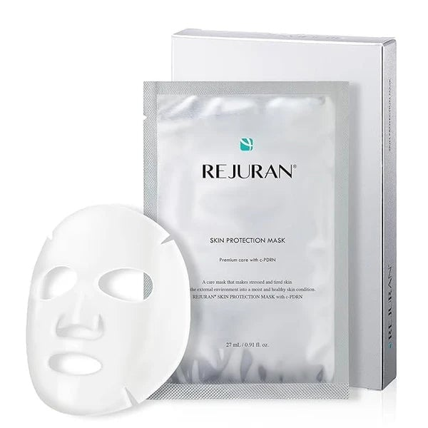
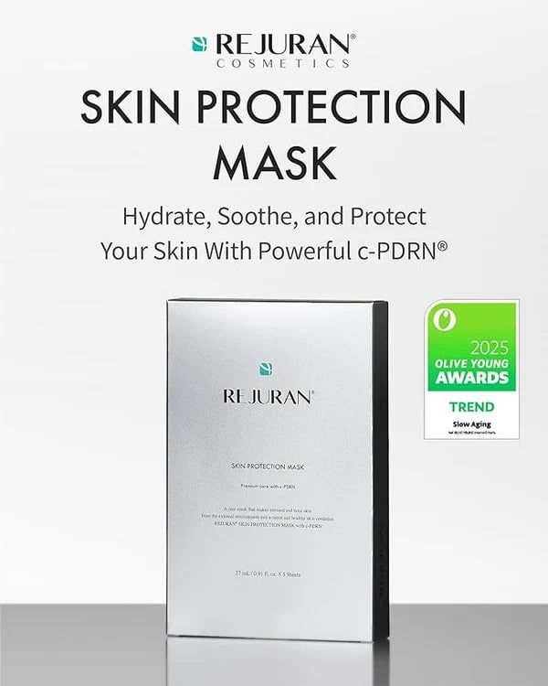
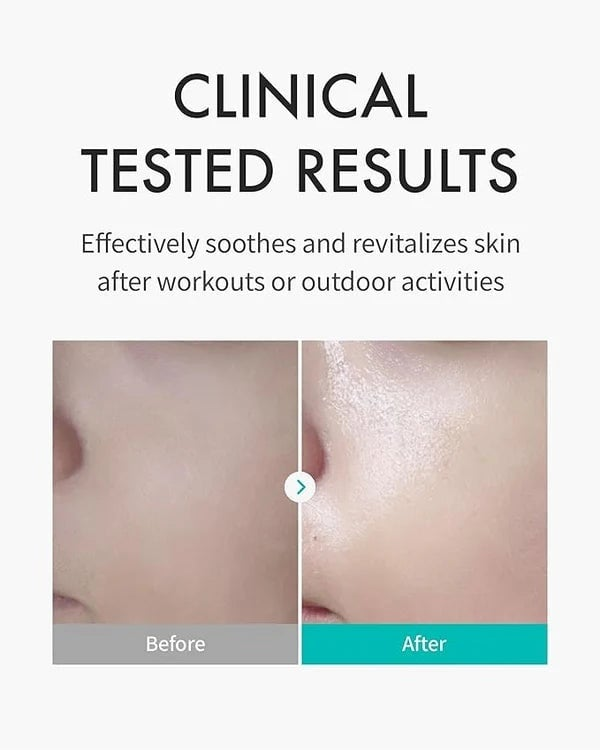
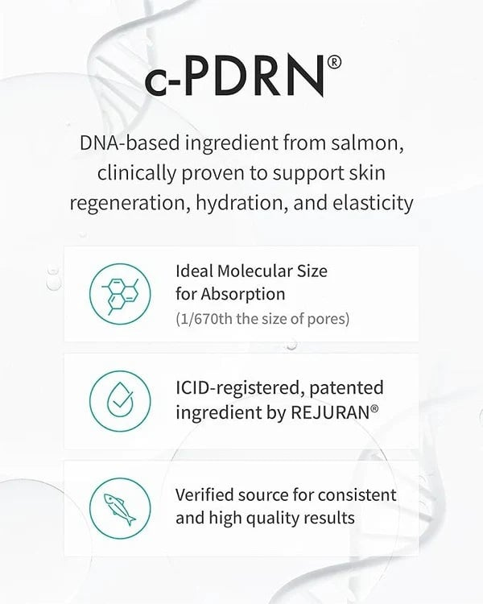
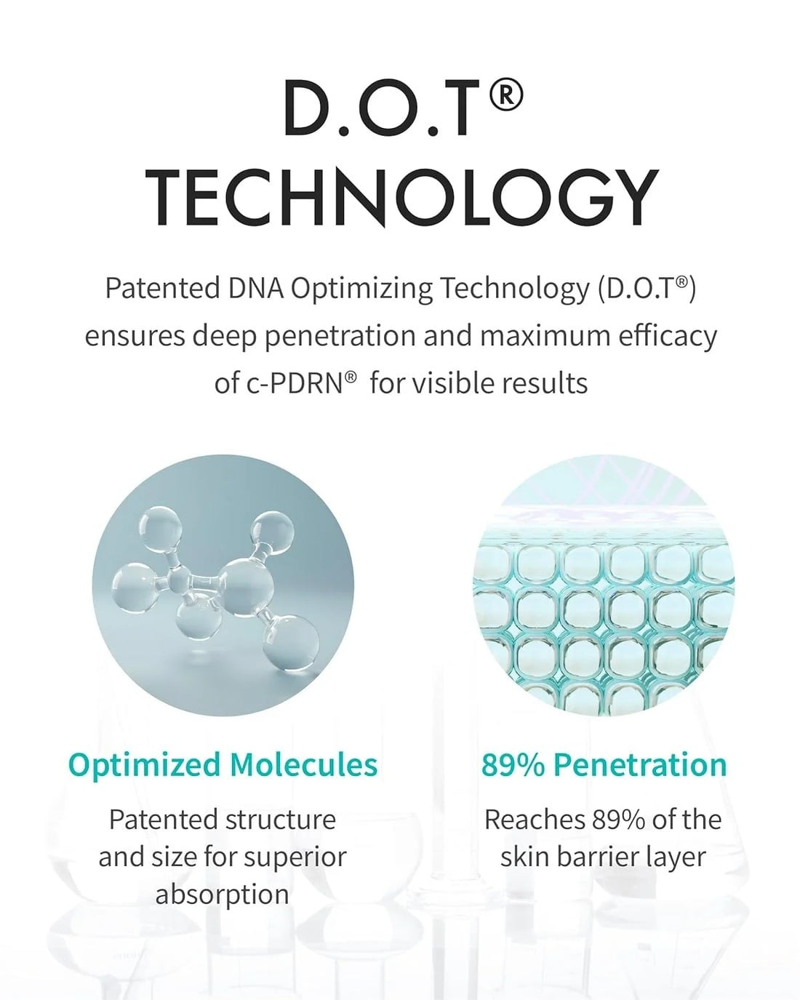

<div> <table style="border-collapse: collapse; width: 99.9809%;" border="1"><colgroup><col style="width: 49.9522%;"><col style="width: 49.9522%;"></colgroup> <tbody> <tr> <td> <div><span style="font-size: 14pt;"><strong>Rejuran Masca de fata</strong></span></div> <div><span style="font-size: 14pt;"><strong>27ml</strong></span></div> <div><span style="font-size: 14pt;">Masca premium Rejuran Skin Protection Mask 27ml, cu o cutia argintie, plicul monodoza si masca textila alba decupata anatomic. Produsul ofera o ingrijire avansata cu c-PDRN, fiind ideal pentru revigorarea si protejarea eficienta a tenului obosit sau stresat.</span></div> </td> <td></td> </tr> <tr> <td></td> <td><span style="font-size: 14pt;">Masca Rejuran, laureata la Olive Young Awards 2025 la categoria &bdquo;Slow Aging&rdquo;, cu &nbsp;tripla actiune a formulei potentate de c-PDRN: hidratare profunda, calmare imediata si protectie de durata, oferind o solutie clinica ideala pentru mentinerea tineretii si vitalitatii pielii.</span></td> </tr> <tr> <td><span style="font-size: 14pt;">Calmare vizibila a rosetii si o revitalizare instantanee a texturii pielii, produsul fiind recomandat dupa antrenamente intense sau activitati prelungite in aer liber.</span></td> <td></td> </tr> <tr> <td></td> <td><span style="font-size: 14pt;">Detalierea proprietatilor c-PDRN, ingredientul activ patentat de Rejuran extras din ADN de somon. Grafica explica modul in care dimensiunea moleculara optimizata (de 1/670 din marimea porilor) garanteaza o absorbtie superioara, fiind o sursa sigura, inregistrata ICID, ce sustine regenerarea, hidratarea si elasticitatea pielii.</span></td> </tr> <tr> <td><span style="font-size: 14pt;">Tehnologia patentata D.O.T. (DNA Optimizing Technology) utilizata de brandul Rejuran. Infograficul ilustreaza modul in care structura moleculara optimizata asigura o penetrare profunda de 89% in straturile barierei cutanate, maximizand eficacitatea ingredientului c-PDRN pentru obtinerea unor rezultate vizibile de intinerire si reparare.</span></td> <td></td> </tr> </tbody> </table> </div>